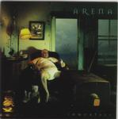

Home Artist links Label link

| Artist: | Arena |
| Title: | Immortal? |
| Label: | Verglas VGCD 019 |
| Length(s): | 55 minutes |
| Year(s) of release: | 2000 |
| Month of review: | 05/2000 |
Line up
Ron Sowden - vocals
John Mitchell - guitars
Clive Nolan - keyboards, backing vocals
Ian Salmon - bass
Mick Pointer - drums
Tracks
| 1) | Chosen | 6.21
|
| 2) | Waiting For The Flood | 5.54
|
| 3) | The Butterfly Man | 8.56
|
| 4) | Ghost In The Firewall | 4.55
|
| 5) | Climbing The Net | 4.40
|
| 6) | Moviedrome | 19.46
|
| 7) | Friday's Dream | 4.44
|
Summary
After the loss of Jowitt and replacing the singer with a new one, Ron
Sowden, I had reason enough to wonder how the band would cope with coming back
after the success of The Visitor. Jowitt has been replaced by old
Shadowland-hand (now also Janison Edge man) Ian Salmon.
The music
Chosen was supposed to be the title track of this album and it is a good one:
although some people may be scared off by the modern rhythmic opening, the
song is a typically catchy Arena track introducing us to the muscled vocals
of Ron Sowden. The bombastic chorus is the eyecatcher of this piece, but it
really is a good one. Waiting For The Flood is a much weaker, acoustic track,
being more a Shadowland composition, a bit overdramatic. A typical Nolan
composition, but not a very good one. I like the bridge, but the chorus
doesn't appeal to me. The song ends with Beatlesque flutish sounds.
The Butterfly man is the next one up and almost nine minutes in length. This
is one of those filmic well-built pieces. Again quite a lot of drama in this
song. The chorus is a bit of the singalong type and can be compared to some
of the longer and better Shadowland compositions. The chorus is repeated
more bombastically and forcefully and then the great theme unrolls on guitar.
This is really a killer theme, with all the grandeur of progressive rock.
Ghost In The Firewall is a tense piece with gurgling and bubbling keyboards
but also a freeing melodic chorus. The oe-oe-oe-oe-aow keyboards remind
me of something, but I can't remember what. Some eighties pop track. The song
ends weirdly with a complex of friendly keyboard sounds. The next track leaves
nothing to chance opneing with a terribly catchy keyboard run. The vocal part
is then a bit of letdown. The song in its up-tempo optimism is somewhat
like Market Square Heroes (but very different in other aspects). The bass
playing is quite pronounced here. The guitar comes to rescue giving the track
a bit of grandeur with long melodic chords. Still, the song is not
without its charms, although maybe a bit too accessible. The major track
on this album is Moviedrome (probably named after the movie of the same name).
Trite to say so, but this song does in fact contain all the ingredients of
what Arena has to offer on this album. Filmic interludes, dramatic vocals,
clavecimbel like keyboards (also present on...was it Waiting For The Flood),
and cutting edge guitar work and flashy keyboardsolo's. What strikes me
is that much of the music has that brooding atmosphere of film music (okay
if we leave out the catchy choruses). Is Nolan going for film music again
soon? Highpoints in this track are the slightly Arabic styled guitar solo
The album closes with the acoustic Friday's Dream. A tranquil track with
a good vocal melody, maybe a bit too accessible.
I don't have the lyrics (as usual), but it seems many of the songs have to
do with movies, so another title for this album might have been Clive
At The Movies. Nolan has been known to do this more often (for instance in
the Hitchcock track on the first Landmarq album). Also Moviedrome is a rather
well-known movie (which I happened to have never seen). I wonder what kind
of track Nolan would make of a film like The Usual Suspects.
Conclusion
All in all it seems Arena has returned with an appreciable album that contains
one weak song (the second), but which for the rest in my opinion brings us back
to the first two studio albums, but more mature. As for the replacements:
nothing to complain there. As compared to there well-received The Visitor, the
music may seem more catchy (although the album does contain its share of
less easy interludes and sound effects), more Shadowlandish if you please,
but I happen to like it. I can't help it.
© Jurriaan Hage